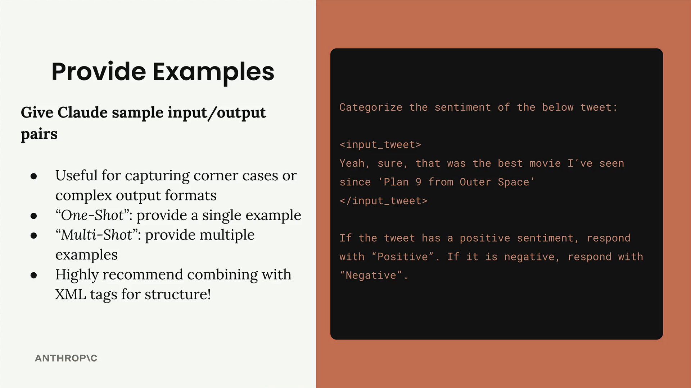
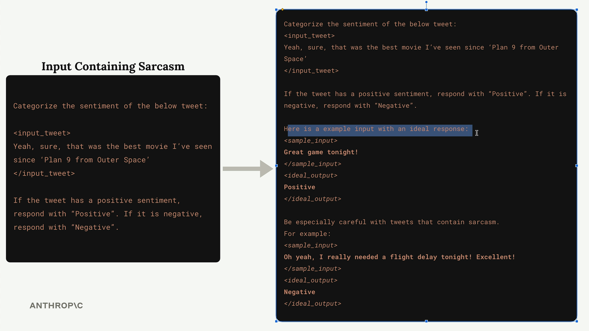
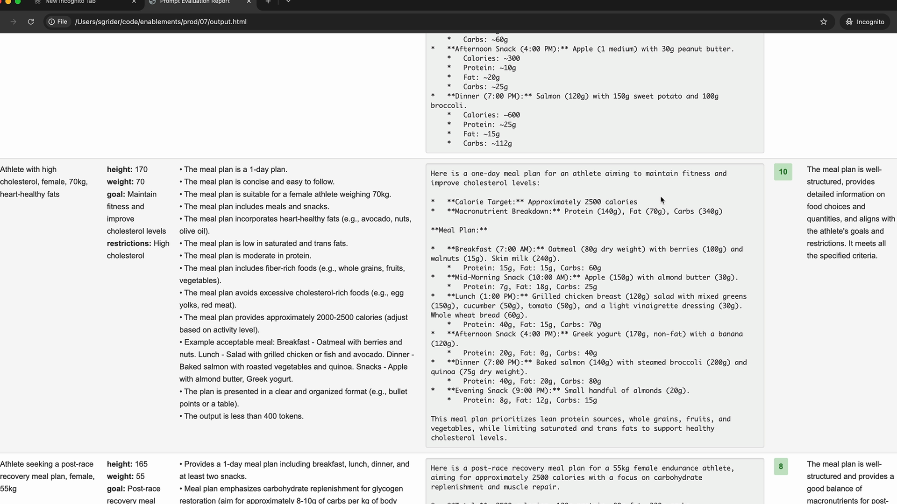

Примеры в промпте
Чему научитесь
Видео 6:44 и текст урока
К концу урока вы сможете:
- отличать one-shot и multi-shot prompting;
- добавлять примеры для пограничных случаев;
- брать удачные примеры из результатов оценки и объяснять, чем они хороши.
Видео и текст урока.
Смотреть урок на Skilljar Providing examples · 6:44Примеры в промпте — один из самых действенных приёмов prompt engineering. Этот подход называют one-shot или multi-shot prompting: вы даёте Claude пары «вход — выход», которые направляют его ответы.
Как работают примеры
Возьмём анализ тональности. Допустим, Claude должен определить, позитивный твит или негативный:

<input_tweet>, ответ — «Positive» или «Negative».Сложность здесь — сарказм. Твит «Yeah, sure, that was the best movie I've seen since 'Plan 9 from Outer Space'» на первый взгляд позитивный, но на деле он саркастический и негативный (Plan 9 славится как один из худших фильмов в истории).
Примеры для пограничных случаев
Чтобы справиться с этим, можно добавить примеры, которые показывают Claude, как обращаться с трудными случаями:

В улучшенный промпт входят:
- ясный позитивный пример: «Great game tonight!» → «Positive»;
- саркастический пример: «Oh yeah, I really needed a flight delay tonight! Excellent!» → «Negative»;
- пояснение, почему к сарказму нужно относиться внимательно.
Обратите внимание: примеры обёрнуты в XML-теги вроде <sample_input> и <ideal_output>. Такая структура делает совершенно ясным, что означает каждая часть.
Когда использовать примеры
Примеры особенно полезны, чтобы:
- покрыть пограничные и нестандартные случаи;
- задать сложный формат ответа (например, конкретную структуру JSON);
- показать нужный стиль или тон;
- продемонстрировать, как обращаться с неоднозначным вводом.
One-shot и multi-shot
One-shot: один пример, задающий образец.
Multi-shot: несколько примеров, покрывающих разные сценарии.
Используйте multi-shot, когда нужно обработать разные пограничные случаи или показать разные виды допустимых ответов.
Хорошие примеры из результатов оценки
Прогоняя оценку промпта, ищите ответы с самыми высокими баллами и используйте их как примеры:

Найдите ответы с баллом 10 (или с максимальным из доступных) и используйте эти пары «вход — выход» как примеры в промпте. Так Claude поймёт, как выглядит «идеальный» ответ именно в вашей задаче.
Контекст к примерам
Не ограничивайтесь парой «вход — выход» — объясните, чем ответ хорош:
<ideal_output> [Your example output here] </ideal_output> This example is well-structured, provides detailed information on food choices and quantities, and aligns with the athlete's goals and restrictions.
Дополнительный контекст помогает Claude понять логику хороших ответов, а не только их формат.
Рекомендации
- всегда оформляйте примеры XML-тегами;
- прямо говорите, что показываете: «Here is an example input with an ideal response»;
- включайте примеры на самые частые случаи ошибок;
- объясняйте, почему ответы в примерах считаются идеальными;
- держите примеры близкими к вашей задаче.
Примеры особенно сильны тем, что показывают, а не рассказывают. Вместо того чтобы пытаться словами описать, чего вы хотите, вы демонстрируете это напрямую. Промпты становятся надёжнее, а Claude улавливает тонкие требования, которые трудно выразить одними инструкциями.
Дальше
В упражнении все приёмы блока применяют вместе — к промпту, который извлекает темы из научного текста.
Оригинал урока: Providing examples.